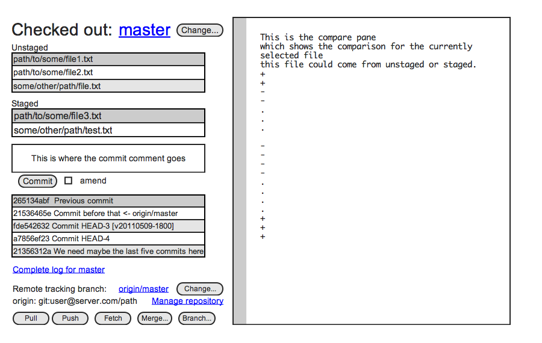

<a href="git-status.html">current Git Status page</a><br/>



<map name="map">
	<area shape="rect" coords="242,490,383,513" href="git-repository.html" />
	<area shape="rect" coords="9,436,186,463" href="git-log.html" />
	<area shape="rect" coords="188,29,291,71" href="git-log.html" />
</map>

<script type="text/javascript" src="http://ajax.googleapis.com/ajax/libs/jquery/1.5.2/jquery.min.js"></script>
<script type="text/javascript" src="http://davidlynch.org/projects/maphilight/jquery.maphilight.min.js"></script>
<script type="text/javascript">
$("img").attr("class", "map");
$(function() {
	$('.map').maphilight({alwaysOn:true, fill:false});
});
</script>